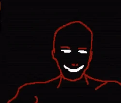
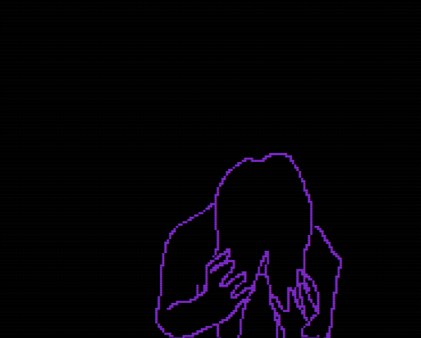
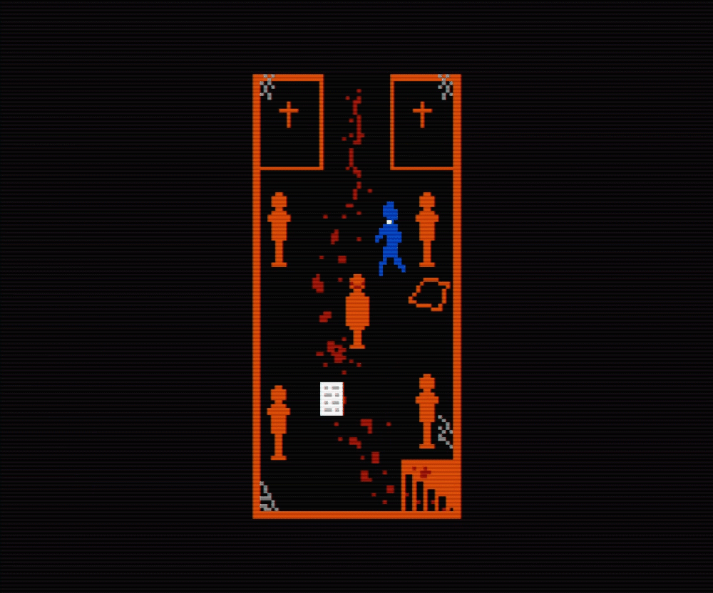
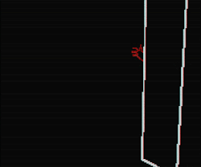

This pixel horror in which you're a preist whose goal is to exorcise demons/ fight against cultists is heavily inspired by the movie "The Exorcist" and old 8 bit video games prevelant back in the 1980s. Everything about it screams old school in a good way all the down to the music/ auido which adds a lot to the fear factor. I highlighted some of the animation scenes that were created by rotoscoping. Currently there are two chapters out and the third, which hasn't been released yet, will be the finale of the game.
   